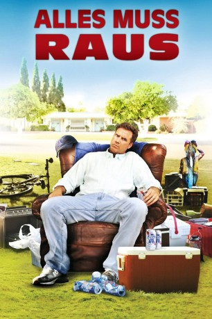
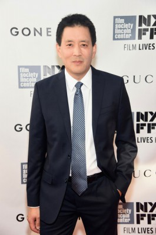

#4035 Alles muss raus
Alternativ: Everything Must Go
 
 IMDB-Wertung: 6.4 / 10
IMDB-Wertung: 6.4 / 10  Metascore: 0
Metascore: 0 
Nick Halsey war sechs Monate trocken bis zu jenem verhängnisvollen Betriebsfest, an dessen Ende er sich nicht mehr erinnert, wohl aber sein Chef, die belästigte Untergebene und der Anwalt. Nun sitzt er frisch verlassen, aus dem Haus geworfen und ohne Job zwischen seinen Sachen im Vorgarten und tröstet sich mit Unmengen vom Sixpacks. Sein Freund, der Cop, schlägt vor, die Sache als Räumungsverkauf zu deklarieren. Und wie sich Nick so von seinen Sachen trennt, wird ihm auf einmal Verschiedenes klar. Und neue Perspektiven tun sich auf.
Jahr: 2010
Dauer: 96 Minuten
FSK:
Land: USA Studio: LionsgateTonspuren: DTS - ,
Untertitel:
Auflösung: 1080p (1920x800) Größe: 5693 MB
Genre: Drama, Komödie
Regisseur: Dan Rush
Drehbuch: Tom Patchett
Soundtrack:
Darsteller:
 Will Ferrell als Nick Halsey
Will Ferrell als Nick Halsey- Christopher Jordan Wallace als Kenny Loftus
 Rebecca Hall als Samantha
Rebecca Hall als Samantha Michael Peña als Frank Garcia
Michael Peña als Frank Garcia Stephen Root als Elliot
Stephen Root als Elliot Laura Dern als Delilah
Laura Dern als Delilah Glenn Howerton als Gary
Glenn Howerton als Gary Todd Bryant als Driver, Repo Guy
Todd Bryant als Driver, Repo Guy Jason Spisak als Hipster
Jason Spisak als Hipster-  Scott Takeda als Bank Manager
- Andy McDermott als Cop
- Narinder Singh als Liquor Store Clerk
- Leslea Fisher als Skinny White Girl , uncredited
- Daniel Ganea als Neighbor , uncredited
- Daniel D. Halleck als Specialist Sears , uncredited
- Tomas Johansson als Yard Sale Patron , uncredited
- Brandon Kihl als Yard Sale Patron , uncredited
- Dave LaBrucherie als Nick's Dad , uncredited
- J. Lyle als Restaurant Patron , uncredited
- Travis Alan McAfee als Garbage Man , uncredited
- Jennifer Pfalzgraff als Nick's Mother , uncredited
- Katrina Ryan als Yard Sale Patron , uncredited
- Torin Sixx als Neighbor , uncredited
- Shannon Whirry als (uncredited
- Rosalie Michaels als Kitty
- Argos MacCallum als Shopper
- Tyler Johnstone als Big Teenager
- Kyle Sharkey als Lanky Teenager
- Matthew Dearing als Jacket Buyer
- Leeann Dearing als Girlfriend
- Christopher H. Cook als Samantha's Husband
- Steven Scally als Fisherman
- Lance Gray als Blender Guy
- Amy Clouser als Secretary , uncredited
- Kevin Cormier als Police Officer , uncredited
- Linda Cushma als Elegant Diner , uncredited
- Michael Flores als Co-Worker , uncredited
- Corin Grimm als Extra , uncredited
- Casey Likes als Young Nick in 1969 , uncredited
- Justin Mack als Sales Representative , uncredited
- Oz als Yardsale patron , uncredited
- Angela Seger als Building Supervisor , uncredited
- Michael Robert Yeager als Chinese Food Delivery Man , uncredited
Datei: X:\2010(A-F)\Alles muss raus (2010, FSK, 1920x800).mkv seit 14.07.2016
Festplatte: HD 2009(G-Z)-2010(A-F)
 Es gibt insgesamt 95 Filme in der Gruppe '2010(A-F)'
Es gibt insgesamt 95 Filme in der Gruppe '2010(A-F)'